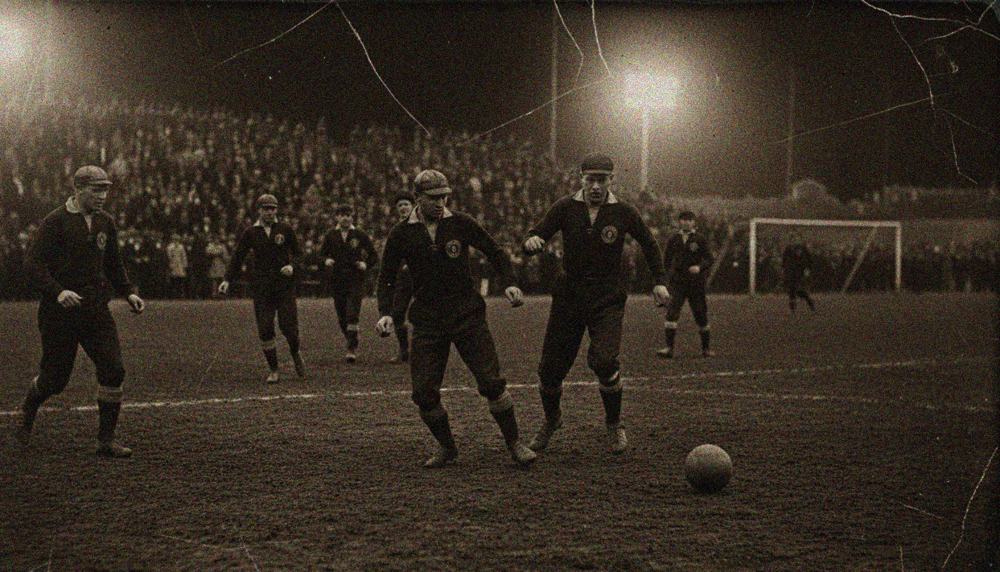
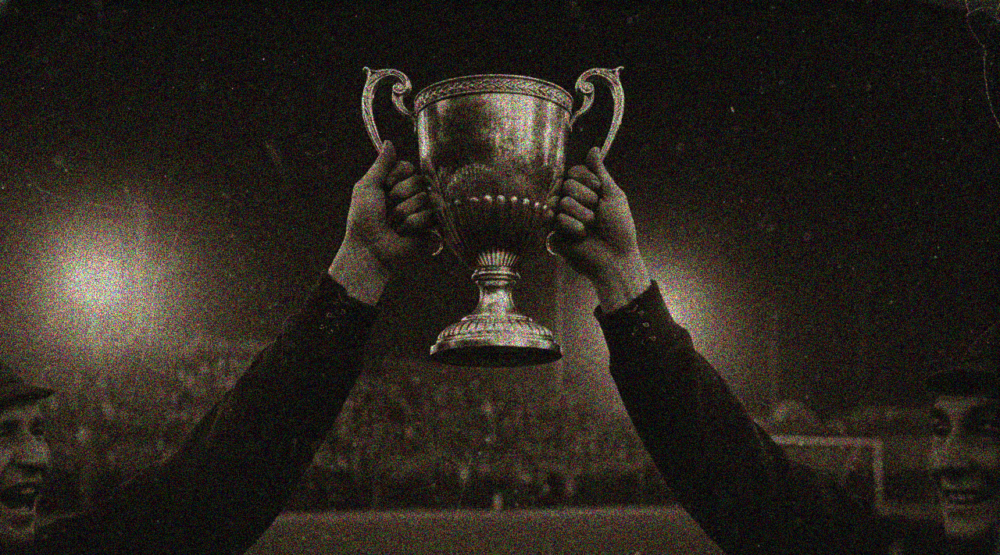
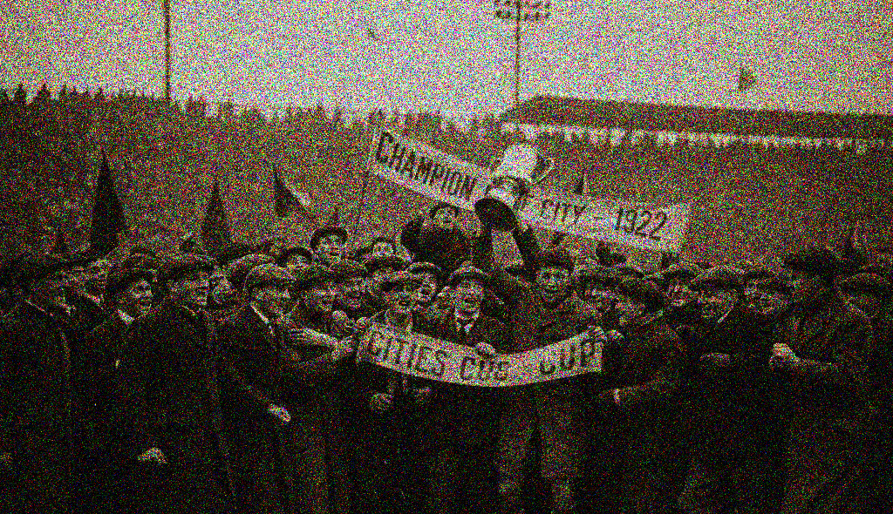
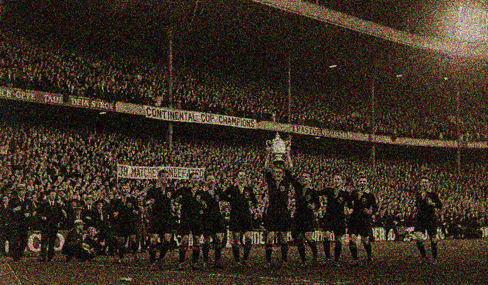
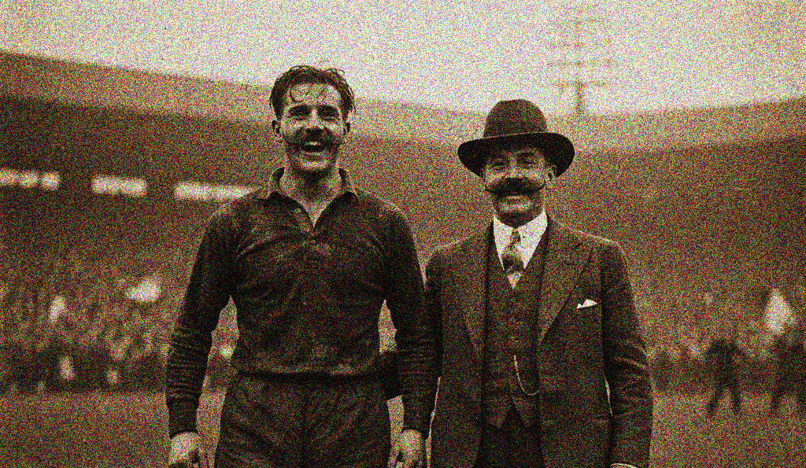

WhinsdorClub
As enormes conquistas de uma história
Taça dos Fundadores
A primeira grande conquista do Whinsdor Club nasceu quando o futebol ainda era jogado em campos irregulares, com traves de madeira e arquibancadas improvisadas. Fundado por operários, comerciantes e jovens universitários, o Whinsdor encontrou na Taça dos Fundadores o símbolo máximo de sua identidade inicial: união, ambição e desafio ao poder estabelecido.

Campeonato Interclubes
O Campeonato Interclubes, torneio que reunia equipes das principais cidades portuárias da Europa, marcou a consolidação internacional do Whinsdor. Em três edições conquistadas em apenas cinco anos, o clube impôs uma hegemonia inédita, derrotando adversários tradicionais e atraindo multidões para partidas fora de casa.

O Grande Retorno
Após a interrupção forçada pelos anos de guerra, o futebol retornou como um símbolo de reconstrução social. Nesse período, o clube conquistou dois títulos metropolitanos consecutivos e uma Copa das Cidades Livres (1922), torneio que celebrava a retomada esportiva do continente. O Whinsdor passou a ser conhecido como “o clube do povo”, reunindo trabalhadores, famílias e jovens sonhadores em torno de suas cores.

A Década Dourada
Os anos 20 marcaram a profissionalização definitiva do futebol — e também o início das sombras que acompanhariam o Whinsdor no futuro. Dentro de campo, o sucesso foi absoluto: quatro ligas nacionais, duas copas continentais experimentais e uma sequência de 38 jogos sem derrota em competições oficiais. Fora dele, o crescimento acelerado trouxe alianças perigosas com dirigentes influentes, empresários e federações fragilizadas. Ainda assim, para o torcedor da época, aquele era o auge: o Whinsdor jogava, vencia e encantava.

Um Último Grito
A Copa da União Atlântica de 1936 representou o último grande troféu antes do colapso institucional. Conquistada em uma final dramática, decidida na prorrogação, a taça foi erguida como um grito de resistência — embora poucos soubessem que já era um adeus. Nos bastidores, investigações avançavam silenciosamente. Acusações de corrupção, manipulação de resultados e desvio de recursos levaram à falência do clube no final da década. O Whinsdor desapareceu dos registros oficiais, mas jamais da memória coletiva.
